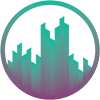

Azad Kavian
Front-End Developer | Software Engineer | Product Builder
I have been mainly a front-end developer using Angular framework, but have done several project with React as well. I have done several projects as a full-stack developer and have some experiences in UI design and AI development.
I am passionate about digital media technologies, social networks, gaming and music. Also a cat-person, autistic and fantasy-lover.
-
 azad.kavian@gmail.com
azad.kavian@gmail.com
-
 +98 998 144 9285
+98 998 144 9285
- linkedin.com/in/azadkavian
-

Vikarno (2022 - Present)
Senior Front-end Developer
In Vikarno, we design and develop various commercial web software, with a specialization in enterprise financial systems and platforms, to help companies and business owners solve their technical problems.
Skills- Angular
- NgXS
- Ionic
- Node
- Python
- UI Design
- Management
-

Navaak (2017 - 2023)
Front-end Developer
I started working as a junior front-end developer back in 2017. But over the years as I learned more and more and gained many experiences by solving challenges and developing different products, I became a senior.
Skills- Angular
- NgXS
- UI Design
- Python
- AI
- GraphQL
-

DidEx (2020 - 2022)
Front-end Developer
DidEx is a cryptocurrency exchange and trading platform with many products like DidEx Trade, DidEx Exchange, DidEx Auth and DidEx Invest
Skills- Angular
- NgXS
- RxJS
- WebSocket
- Material
- Task Assignment
-
Takhfifan (2017 - 2017)
Junior Front-end Developer
As my first serious role as a web developer, I participated in developing some features and tweaks for the main website of Takhfifan, and started the Yadisa project as my main activity in the team.
Skills- Backbone.js
- Bootstrap
- jQuery
Work Experiences
-

AmirKabir University of Technology (2011 - 2016)
Bachelor of Science (BS), Computer Science
Worked in Scientific Association of Mathematics and Computer Science. Technical Committee Member of AUT Robotics Competitions (2015). Manager of Turing-Khayyam Festival.